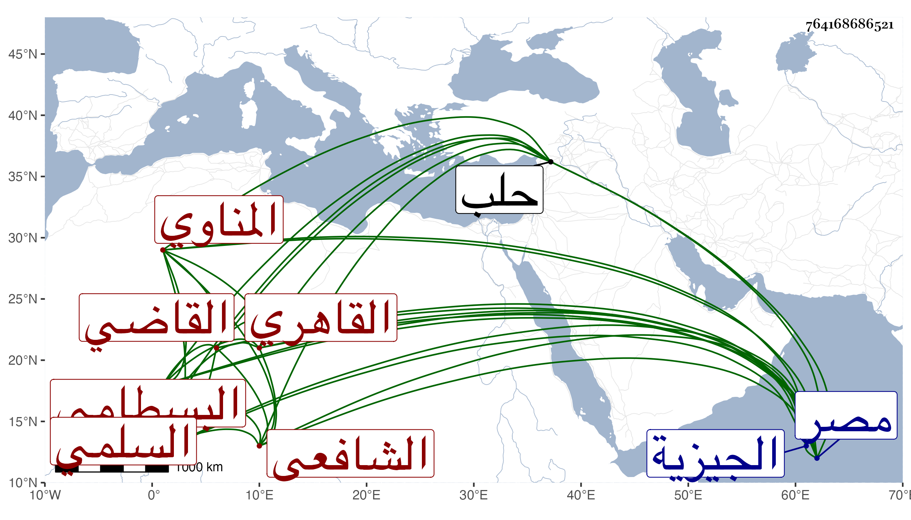

0902Sakhawi.DawLamic.ITO20230111-ara1.EIS1600.764168686521
Biography ID: 764168686521
867
محمد بن إبراهيم بن إسحاق بن إبراهيم بن عبد الرحمن الصدر أبو المعالي بن الشرف السلمي المناوي نسبة لمنية القائد فضل بن صلح من أعمال الجيزية ثم القاهري الشافعي القاضي سبط الزين عمر البسطامي القاضي . ولد في ثامن رمضان سنة اثنتين وأربعين وسبعمائة وأبوه حينئذ ينوب في القضاء عن العز بن جماعة فنشأ في حجر السعادة وحفظ القرآن والتنبيه وغيره ، وسمع من الميدومي والحسن بن السديد وابن عبد الهادي وعبد الله بن خليل المكي ومحمد وإبراهيم ابني الفيومي وآخرين تجمعهم مشيخته وهي في خمسة أجزاء تخريج الولي العراقي ، وناب في الحكم وهو شاب وولي إفتاء دار العدل والتدريس بالشيخونية والمنصورية والسكرية ودرس وأفتى قليلا وخرج أحاديث المصابيح وتكلم على أماكن منه وسماه كشف المناهي والتناقيح في تخريج أحاديث المصابيح وكذا كتب شيئا على جامع المختصرات وغير ذلك كتأليف في القولين ، وولي القضاء بالديار المصرية استقلالا في أيام المنصور حاجي ومدبر المملكة منطاش عوضا عن الناصري بن الميلق وذلك في يوم الخميس سلخ شوال سنة إحدى وتسعين وسبعمائة فباشره بشهامة واستقامة إلى أن صرف بعد دون شهرين في سابع عشري ذي الحجة منها بالبدر بن أبي البقاء ثم أعيد في ثاني المحرم سنة خمس وتسعين ثم صرف في التي تليها بالبدر أيضا ثم أعيد في شعبانها ثم صرف بأحد نوابه التقي الزبيري في جمادى الأولى سنة تسع وتسعين ثم أعيد في رجب من التي تليها ودرس أيضا بجامع طولون والشافعي وغيرهما من الوظائف المضافة للقضاء ، ومات الظاهر برقوق في أثناء ولايته هذه فآمن على نفسه لكونه كان لا يطمئن إليه لما اتفق أن ابتداء ولايته كان من قبل منطاش والناصري وفي أيام غيره لا يتجرأ أحد عليه لما تقرر له في القلوب من المهابة فلما سافر الناصر فرج إلى البلاد الشامية لقتال الطاغية تيمور لنك في سنة ثلاث وثمانمائة كان ممن برز معه ولم يحسن المداراة مع عدوه فأهانه وبالغ في ذلك حتى مات وهو معهم في القيد غريقا في نهر الزاب بالفرات عند قنطرة باشا في شوال منها وكان بعض التمرية أسروه فلما جازوا به النهر خاض الأمير هو وأتباعه لأجل ازدحام وغيرهم على القنطرة فغرق القاضي لتقصيرهم في حقه بعد أن قاسى أهوالا عسى أن يكون كفر بها عنه ما جناه عليه القضاء ، والعجب أنه كان شديد الخوف من ركوب البحر إما لمنام رآه أو رؤي له أو اعتمادا على قول بعض المنجمين بحيث كان لا يركبه إلا نادرا فقدر موته غريقا ، وقد حدثنا عنه خلق منهم شيخنا وذكره في معجمه وأنبائه ورفع ، الإصر وذكره ابن قاضي شهبة في الطبقة الثامنة والعشرين من طبقات الشافعية ، وابن خطيب الناصرية في تاريخ حلب والتقي الفاسي في ذيل التقييد والأقفهسي في معجم ابن ظهيرة والمقريزي في عقوده وطوله وآخرون وكان ذا هيبة عظيمة ونزاهة وقوة نفس وحشمة ودنيا متسعة كثير التودد إلى الناس معظما عند الخاص والعام محببا إليهم وقبل ولايته كان يسلك طريق ابن جماعة في التعاظم وفي الاعتناء بتحصيل نفائس الكتب بحيث حصل منها شيئا كثيرا فلما استقل بالقضاء لان جانبه كثيرا مع تكرم على الطلبة بالإطعام ومداراة لمن لعله يقصر في حقه بالستر مع قدرته على هتكه بالانتقام وعندي في ذلك حكايات ، ولم يعقب رحمه الله وإيانا .
